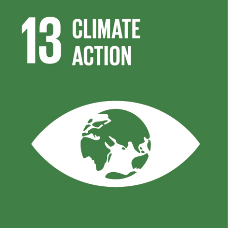
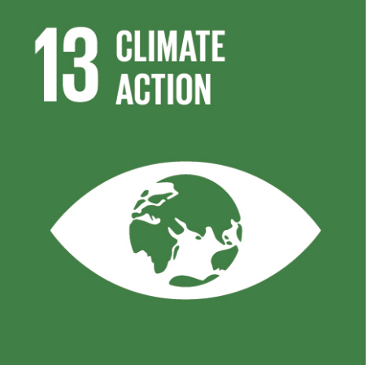

SUSTAINABLE DEVELOPMENT GOALS


 



SDG 2.5: By 2020, maintain the genetic diversity of seeds, cultivated plants and farmed and domesticated animals and their related wild species, including through soundly managed and diversified seed and plant banks at the national, regional and international levels; and promote access to and fair and equitable sharing of benefits arising from the utilisation of genetic resources and associated traditional knowledge, as internationally agreed.
SDG 3.b: Support the research and development of vaccines and medicines for the communicable and non-communicable diseases that primarily affect developing countries; provide access to affordable essential medicines and vaccines, in accordance with the Doha Declaration on the TRIPS Agreement and Public Health, which affirms the right of developing countries to use to the full the provisions in the Agreement on Trade-Related Aspects of Intellectual Property Rights regarding flexibilities to protect public health; and, in particular, provide access to medicines for all.
SDG 3.9: By 2030, substantially reduce the number of deaths and illnesses from hazardous chemicals and air, water and soil pollution and contamination.
SDG 6.3: By 2030, improve water quality by reducing pollution, eliminating dumping and minimising release of hazardous chemicals and materials, halving the proportion of untreated wastewater and substantially increasing recycling and safe reuse globally.
SDG 6.6: By 2020, protect and restore water-related ecosystems, including mountains, forests, wetlands, rivers, aquifers and lakes.
SDG 12.4: By 2020, achieve the environmentally-sound management of chemicals and all wastes throughout their life cycle, in accordance with agreed international frameworks, and significantly reduce their release to air, water and soil in order to minimise their adverse impacts on human health and the environment.
SDG 13.1: Strengthen resilience and adaptive capacity to climate-related hazards and natural disasters in all countries.
SDG 14.c: Enhance the conservation and sustainable use of oceans and their resources by implementing international law as reflected in United Nations Convention on the Law of the Sea, which provides the legal framework for the conservation and sustainable use of oceans and their resources, as recalled in paragraph 158 of "The future we want".
SDG 14.2: By 2020, sustainably manage and protect marine and coastal ecosystems to avoid significant adverse impacts, including by strengthening their resilience, and take action for their restoration in order to achieve healthy and productive oceans.
SDG 15.1: By 2030, ensure the conservation, restoration and sustainable use of terrestrial and inland freshwater ecosystems and their services, in particular forests, wetlands, mountains and drylands, in line with obligations under international agreements.
SDG 15.5: Take urgent and significant action to reduce the degradation of natural habitats, halt the loss of biodiversity and, by 2020, protect and prevent the extinction of threatened species.
SDG 15.8: By 2020, introduce measures to prevent the introduction, and significantly reduce the impact of, invasive alien species on land and water ecosystems and control or eradicate the priority species.